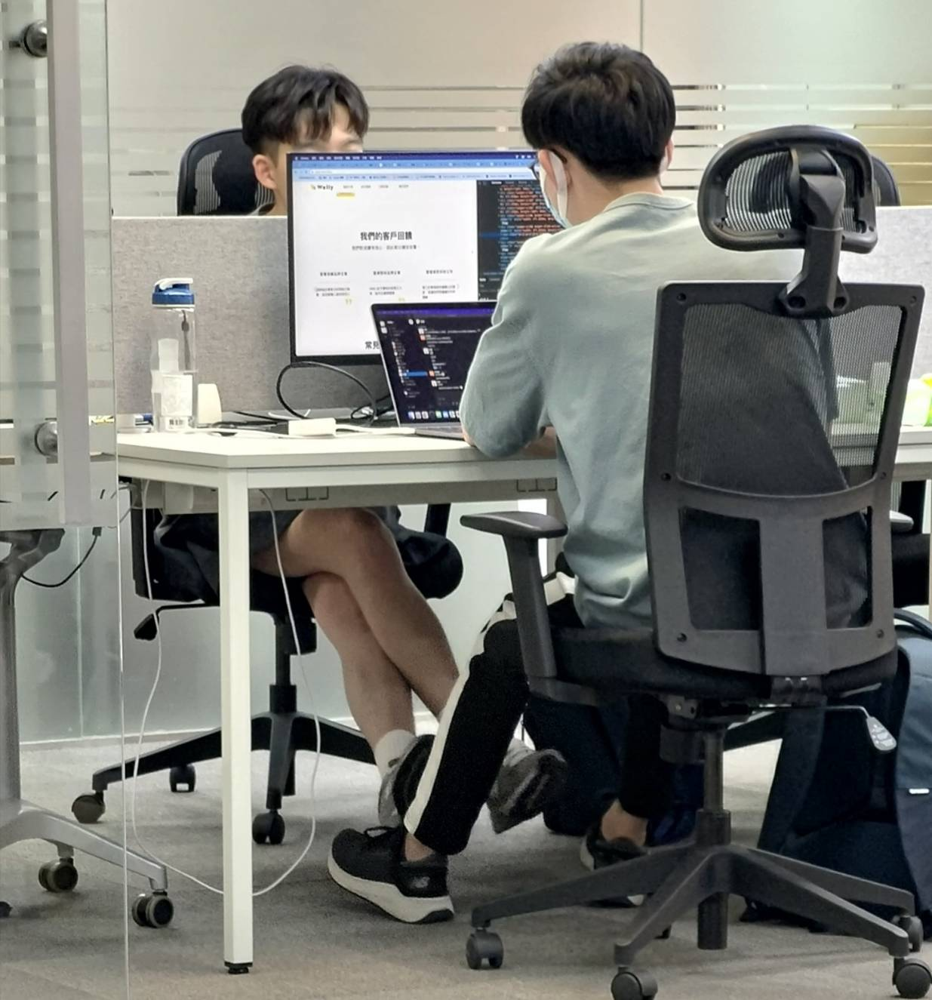
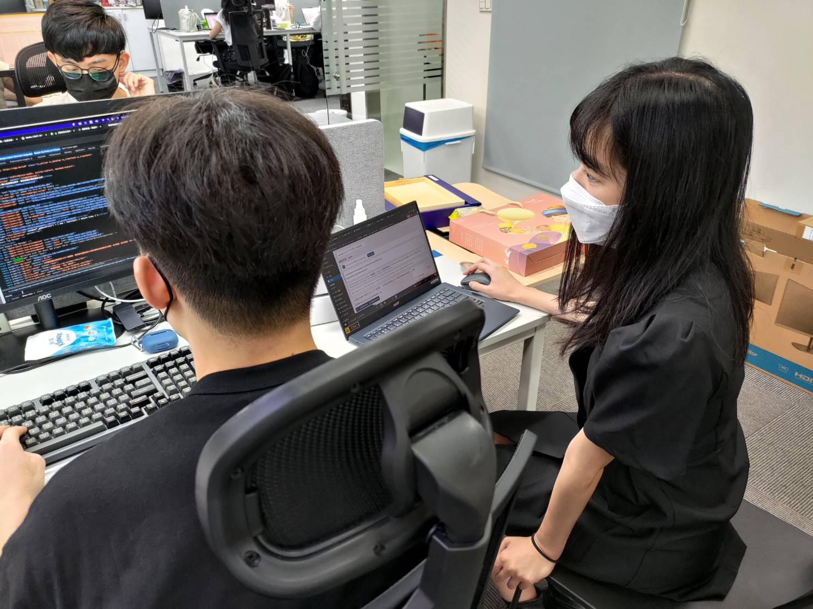
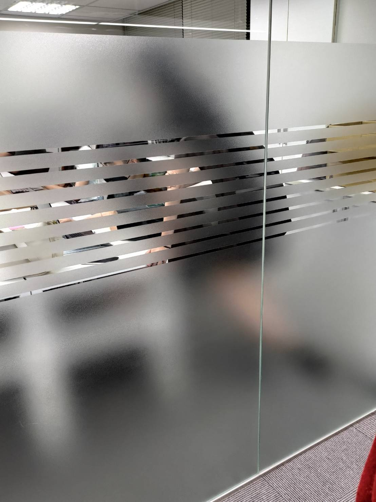
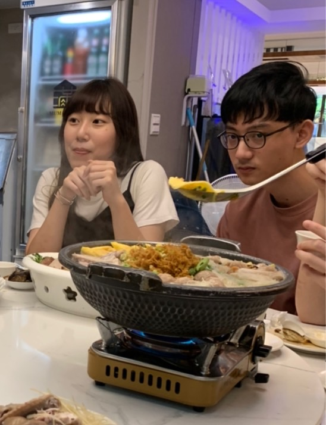

一如往常的週一上午，Ｗelly的同仁們專注在自己的工作上，忙碌地回覆著客戶的訊息。
「欸，今天是不是有新工程師要來報到啊？」一個問句打破了辦公室的寂靜。
就在這時，一個戴著圓框眼鏡的男孩走了進來，他顯然有些怕生，慌張地望了望周遭的環境，等待著有人招呼他。
但忙於工作的眾人們，顯然沒有餘裕撥出一點時間為這位男孩引路。
突然，另一位掛著笑容的男孩也踏入了這間公司，以工程師而言，他的打扮算是時尚許多，雖然有點像個玩咖，但笑起來時還是有些靦腆。
同樣坐在等待區的2人，在無事可做的狀況下，便自然地交談起來。那時，他們還不明白從今往後會有怎樣的糾葛等待著他們。
來到這間公司數個月的時間，他們彼此扶持，解決了客戶帶來的各式疑難雜症。在壓得人喘不過氣的大量程式中，惟有與對方交談及互動的時光最安心與舒適。
不過即使如此小心翼翼，卻終是透露了蛛絲馬跡，除了對話中不時洩漏的曖昧，更有情報指稱2人在工作時偷偷地勾腳。

雖然針對這段傳言，2人都以玩笑帶過，但在一次的酒攤中，卻吐露了令人震驚的真相，話語這層紙，終究是包不住愛意的烈火。
從上述影片加上之前透露的種種線索，我們可以發現2人顯然同居已久，關係也並非如表面上宣稱的朋友如此一般。
至此，雖然2人表面上都沒有承認這段戀情，但公司同事們都已心照不宣。只是原以為會長久持續下去的戀情，卻沒人能預想到他們即將在暑假面臨的暗潮湧動。

「可以問一下這個後台該怎麼辦才好嗎～」她是暑假新來的實習生，高挑的身材與靈動的雙眼，略帶溫軟的話語，許多人都難以抵擋他的攻勢。

漸漸地，與她相處的時光越來越多，2人時常窩在小房間或是工程桌旁，探討著關於程式的點點滴滴。有些木頭的他，始終沒有發現另一半焦躁不安的心。
原先屬於2人的程式領域被人侵奪，對方這樣的舉動顯然使人傷透了心。也就在此時，他與一名愛笑活潑的女孩也接上了線。
女孩也是公司裡的實習生，一向熱情的她，總是能為公司帶來活絡的氣氛。

這幾週以來，眾人可以感覺到粉紅色的氛圍越來越濃烈。
究竟他們會如何發展下去？原先2人的關係還能繼續穩固嗎？4人複雜的關係最後又會落向何方？只能等待未來揭曉。